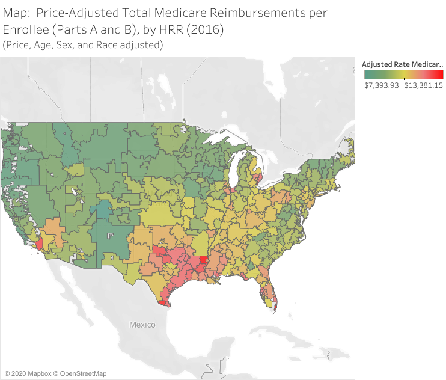

7 Physicians as Gatekeepers
The U.S. health care system, like its insurance system, is unique in many ways. One of its defining features is its fragmentation and heavily decentralized nature. As such, individual health care experiences differ dramatically across and even within geographic locations. The purpose of this chapter is to provide a basic understanding of the organizational structure of the U.S. health care system, focusing in particular on the role of physicians in health care delivery.
7.1 Basic Structure of Health Care Delivery
Healthcare delivery involves a wide range of players and components. Physicians, nurses, hospitals, prescription drugs, rehabilitation services, long-term care services, and ancillary services like laboratories and imaging centers collectively form the diverse landscape of healthcare. Among these, physicians play a particularly influential role as they have a significant impact on various aspects of healthcare delivery.
Physician training and interactions are crucial factors that shape healthcare practices. Training, residency, and fellowship programs can influence the future practice styles of physicians. Additionally, the distinction between primary care and specialists, as well as referrals within and across different types of physicians, significantly impact the dynamics of healthcare interactions.
Physicians can also have different organizational affiliations, which further shape their practice environments. Some physicians are self-employed, managing their own practices, while others are part of larger group practices. There are also physicians who are vertically integrated with hospitals or insurers, establishing closer ties with these entities.
Many treatments also involve some interaction between a physician and a hospital. Here, the healthcare landscape encompasses various types of hospitals catering to different needs. These include general acute-care hospitals for short-term treatments, rehabilitation hospitals, specialty hospitals such as Children’s hospitals, orthopedic, cardiac, and cancer centers, long-term care hospitals, as well as stand-alone surgery centers and emergency departments. The distinction between inpatient and outpatient services adds to the diversity of healthcare facilities.
Ownership type is another significant aspect within healthcare. Hospitals and healthcare organizations can have different ownership structures, such as government-owned or assisted, private not-for-profit, private for-profit, or even private equity ownership. These ownership models can impact the functioning and characteristics of healthcare institutions.
7.2 The role of physicians
Considering the diverse array of healthcare players and components, physicians hold a pivotal role as “gatekeepers” in many aspects of healthcare. They serve as the entry point into the healthcare system for most patients, including in emergency departments. Primary care physicians refer patients to specialists and ancillary services. Specialists, in turn, refer patients to other specialists and ancillary services, and may make decisions regarding the location of surgeries if required. Specialists or hospitalists also play a role in referring patients to follow-up care after inpatient stays. Moreover, physicians of all types are involved in selecting appropriate medications for patients.
Physicians possess more information and knowledge compared to patients, granting them a higher level of influence over healthcare decisions. This concept, known as physician agency, refers to physicians acting as “agents” making or suggesting healthcare decisions on behalf of their patients. A crucial empirical question is therefore when and if these decisions align with what patients would have chosen themselves.
7.3 Variation in Health Care Utilization
Physician agency has consequences that affect healthcare utilization and patient experiences. Patients may face information frictions or financial incentives influenced by physicians. The type of care individuals receive can depend on the preferences and practices of their physicians, leading to significant variation in healthcare utilization and spending across different markets and even within the same market. Understanding and addressing this variation is crucial for optimizing healthcare outcomes. The potential for physician influence on health care variation is exemplified in a recent report from the National Institute for Health Care Management, Is Health Care Shoppable?
Considering the impact of physician agency on healthcare spending, the Dartmouth Atlas of Health Care provides several ways of visualizing healthcare variation across different regions. As shown in Figure 7.1, the U.S. experiences significant variation in health care utilization across different geographic areas.

The extent of this variation is perhaps better illustrated with a plot of per-beneficiary spending, as in Figure 7.2.

When examining healthcare variation, the concept of waste in healthcare comes into focus. Estimates suggest that more than 30% of healthcare expenditures are considered “wasteful.” Examples of waste include payment differentials based on the location of treatment, overutilization of certain imaging techniques with limited benefit, inappropriate use of proton treatment for certain conditions, unnecessary placement of heart stents in specific patient populations, and the performance of arthroscopic knee surgery where other treatment options may be more suitable.
However, identifying waste in healthcare is challenging, as many assessments are retrospective. It is difficult to pinpoint waste in advance. Nevertheless, it is important to explore strategies to reduce waste and optimize resource allocation in healthcare, taking into account the complexities of physician agency and the dynamic nature of healthcare decision-making.